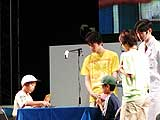
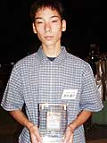

ポケモンカードゲームのイベント「ポケモンカード バトル★ネオ サマーロード」。地区予選を勝ち抜いてきた優勝者たちが、いよいよスペースワールドで最終決定戦に挑戦します。日本一のプレイヤーが今日、このステージで決まるのです。
ポケモンカードやポケモンのファンの子どもたちが、記念すべき対戦をひと目見ようと、ステージ前に集まってきています。ステージには全国７地区を勝ち抜いてきた勇者たちがズラリ。ジュニアトーナメント、シニアトーナメントをあわせて14人のプレイヤーたちが並びました。この中で８人が、今回の最終決定戦に臨むのです。バトルのルール説明のあと、白衣のポケモン研究所員がステージに登場し、会場をわかせました。
|
さあ、いよいよ準決勝バトルの開始です。４つのテーブルに分かれ、緊張した面持ちで向き合うプレイヤーたち。お互いのカードを切りあって、バトルスタート。ポケモン研究所員とお姉さんが、解説をしながら進めてくれるので、ポケモンカードを知らない人にもわかりやすいですね。この準決勝バトルを勝ちぬいたプレイヤーが、決勝バトルに進めるのです。各対戦テーブルが、大きくスクリーンに映し出されます。緊張感あふれるバトルの様子が、こちらにもひしひしと伝わってきます。さすが地区大会優勝者、全員がすばやくカードをめくっていきます。バトルの展開もスピーディなのです。「ベイビーポケモンはなかなか手ごわいですね」「これは草ポケモンデッキですね」などと、司会のお姉さんと研究所員のコメントが入るので、バトルの様子がよくわかりますね。
|
 熱い熱い準決勝バトルが終了し、ジュニア２人、シニア２人の勝者が決まりました。ついに決勝バトルです。ジュニアとシニアそれぞれ１組ずつが戦って、日本一を決めます。激戦を勝ち抜いてきたトッププレイヤーたちも、日本一決定戦とあって少々緊張ぎみ。張りつめた空気の中、最後のバトルが展開されます。決勝戦ならではの強力なデッキばかりです。次々とドローされていくカード。しかし、ついに勝敗を決するときが来ました。最初に優勝者が決まったのはジュニアトーナメント。マリルのバブルシャワーで、関西地区代表の中川勝哉くんが勝ち、大きな拍手がわきました。一方、熱い戦いが続くシニアのテーブル。しかし、こちらも制限時間を待たず関西地区代表の原田貴壮くんが華麗に勝利しました。なんと、ジュニア、シニアともに関西地区の代表者が栄冠を勝ち取るという結果になりました。
|
表彰式にはポケモンの総合プロデューサーである石原恒和氏がプレゼンターとして登場。その姿に、ポケモンファンで埋まった会場は大いにわきます。優勝者には本人の写真入り特製カードをはさみこんだクリスタルの盾が送られ、観客からも大きな拍手が寄せられました。石原プロデューサーからは「長い大会なのに、ここまでよくがんばりました」と激励の言葉が。さらに、このあと、ジュニアのプレイヤーにはハワイで行われる世界交流戦が控えていることを告げ、会場を驚かせました。
|
 ジュニア日本一の中川勝哉くんは、「ポケモンカードは１年くらいやっています。勝ててうれしい。デッキは１つだけで勝負しました」とうれしそうにコメント。シニア日本一の原田貴壮くんは、「準決勝がキツかった。地区大会では札がよくなかったけれど、今回はわりと恵まれていました。これからもカードバトルを続けていきたいと思います」と心意気を語ってくれました。
こうして、「ポケモンカード バトル★ネオ サマーロード」日本一決定戦は終了しました。引き続き、会場ではゲームボーイアドバンスの専用ユニット「カードｅリーダー」を使って遊ぶ新しいポケモンカード「ポケモンカード★ｅ」の展示を行なっています。みなさん、ぜひお立ちよりください。
|